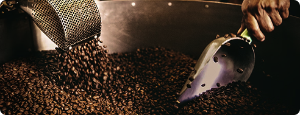

A história do café começa nas terras altas da Etiópia, por volta do século IX. Segundo a lenda mais popular, um pastor de cabras chamado Kaldi notou que seus animais ficavam particularmente energéticos após comerem os frutos vermelhos de uma determinada árvore. Intrigado, Kaldi experimentou os frutos e sentiu o mesmo efeito estimulante.
Monges de um monastério próximo ouviram sobre a descoberta e começaram a usar os frutos para preparar uma bebida que os ajudava a permanecer acordados durante longas horas de oração noturna. Assim nasceu a primeira versão do que hoje conhecemos como café.

Acredita-se que o café tenha surgido na Etiópia e, no século XV, atravessado o Mar Vermelho até o Iêmen, onde começou a ser cultivado de forma mais organizada.
Com o passar do tempo, a bebida se espalhou pela Pérsia, Egito, Síria e Turquia, conquistando espaço por suas características estimulantes, que ajudavam as pessoas a permanecerem despertas durante momentos de oração, estudos e encontros sociais.
No mundo árabe, o café rapidamente se tornou símbolo de encontros, conversas e momentos de convivência. A bebida era apreciada em locais conhecidos como “qahveh khaneh”, considerados os primeiros modelos das cafeterias modernas.
Com sua popularidade crescente, o café passou a fazer parte da cultura e da rotina de diferentes sociedades ao redor do mundo.
No século XVII, o café chegou à Europa através dos mercadores venezianos e rapidamente despertou a curiosidade de diferentes países. Inicialmente visto com desconfiança por parte de alguns religiosos, a bebida logo conquistou espaço entre a população e se tornou símbolo de encontros e conversas.
A Itália foi um dos primeiros países europeus a popularizar o consumo do café, transformando-o em uma bebida apreciada principalmente pelas classes mais altas. Em 1651, foi inaugurada em Oxford a primeira cafeteria da Inglaterra, marcando o início da expansão das cafeterias pelo continente. Pouco tempo depois, cidades como Londres e Paris passaram a reunir cafés conhecidos por promover encontros sociais, discussões intelectuais e trocas de ideias que influenciaram a cultura da época.
O café chegou ao Brasil em 1727, quando Francisco de Melo Palheta trouxe as primeiras sementes da Guiana Francesa. Segundo a lenda, elas teriam sido entregues de forma discreta durante uma missão diplomática. As primeiras mudas foram plantadas em Belém, no Pará, marcando o início da trajetória do café no país.
Com o passar dos anos, o cultivo se expandiu para o Sudeste, especialmente para o Rio de Janeiro e o Vale do Paraíba, onde o clima e o solo favoreceram o crescimento das plantações. Durante o século XIX, o café se tornou um dos principais motores da economia brasileira, impulsionando o desenvolvimento de regiões como São Paulo e Minas Gerais e dando origem aos conhecidos “barões do café”.
Mesmo após períodos de crise econômica, o café permaneceu como parte importante da história e da cultura do Brasil, consolidando o país como um dos maiores produtores de café do mundo até os dias atuais.
A palavra “café” tem origem no termo árabe “qahwah”, que inicialmente significava “vinho”. Com o tempo, a palavra passou pelo turco “kahve” até chegar ao italiano “caffè”.
O café é a segunda bebida mais consumida do mundo, ficando atrás apenas da água. Estima-se que cerca de 2,25 bilhões de xícaras sejam consumidas diariamente.
O processo de descafeinização foi descoberto acidentalmente em 1903, quando uma carga de café foi encharcada por água do mar durante o transporte.
Em 1932, durante as Olimpíadas de Los Angeles, o Brasil enfrentava dificuldades financeiras. Para custear a viagem da delegação, atletas viajaram em um navio carregado de café e os grãos eram vendidos nos portos ao longo do percurso.
A palavra “espresso” vem do italiano e significa “expresso” ou “rápido”, fazendo referência ao método de preparo sob pressão que extrai o café em poucos segundos.
Em 1735, o compositor Johann Sebastian Bach criou a obra “Cantata do Café”, uma peça inspirada na popularidade da bebida e no hábito de consumir café na sociedade europeia da época.
Atualmente, o café vai muito além de uma simples bebida do dia a dia. A chamada “Terceira Onda do Café” trouxe uma valorização maior da origem dos grãos, dos métodos de preparo e da produção artesanal, destacando aromas, sabores e experiências únicas em cada xícara.
De uma descoberta nas montanhas da Etiópia até se tornar parte da cultura mundial, o café atravessou séculos conectando pessoas, histórias e tradições. Hoje, cada xícara representa não apenas sabor e aroma, mas também momentos de conforto, encontros e paixão pelo universo do café.